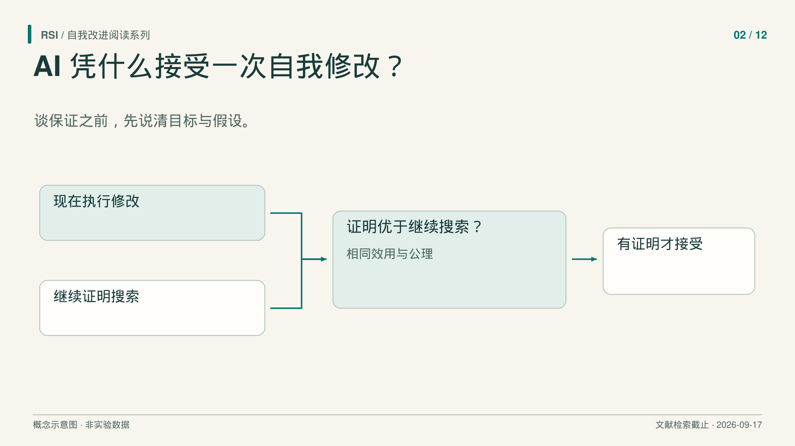
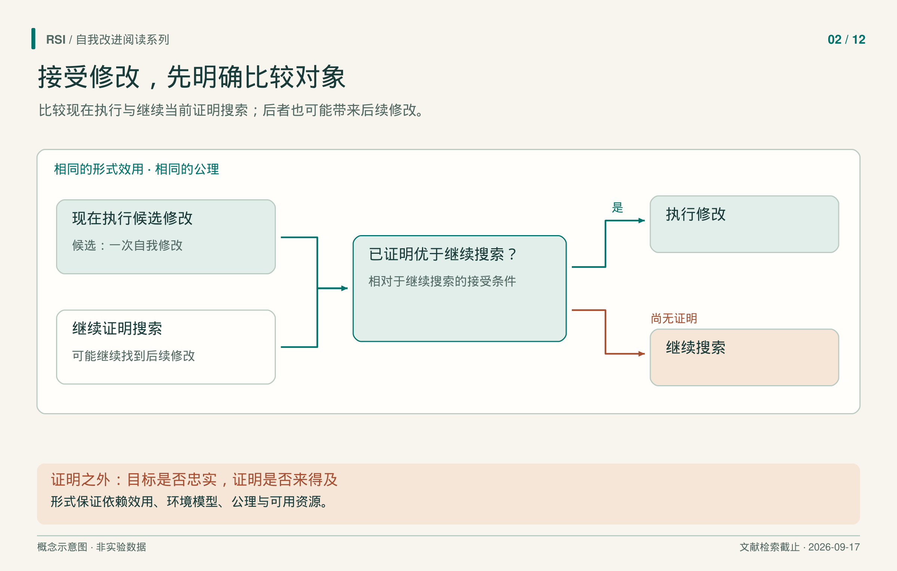

设想一个编程 agent 找到了修改自身搜索程序的补丁。它看起来有助于找到更好的解，却也可能删掉有用分支、改变“成功”的含义，或让系统失去明天找到更好补丁的机会。只比较新旧版本的当前表现，还不足以处理这些可能性。
两类形式分析把缺失的比较写清楚了。Gödel machine 问：什么时候可以证明，现在切换比继续当前搜索更好？Everitt 等人问：后继系统的策略或效用可以变化时，应该用哪个效用评价未来？这些工作的价值，在于说明接受保证究竟需要什么。

“保证改进”需要说清目标，也需要说清范围。
等待也是一种选择
在 Schmidhuber 的 Gödel machine 中，证明搜索程序寻找有益的自修改。通过接受条件后，修改可以重写可写软件，包括证明搜索器本身。寻找改进的方法因此也进入可改进范围。
但机器首先需要效用函数，以及描述硬件、初始软件和相关环境假设的公理系统。“有益”要在这些描述中获得证明，证明结论也受形式模型约束。
关键比较比“补丁胜过旧任务程序”更强。用教学性的表达，接受条件是：
在给定公理下，证明现在切换的效用高于继续运行当前证明搜索器。
“继续”包含日后找到并执行其他修改的可能性，也包含继续搜索的时间和资源消耗。两个选项必须从相同当前状态比较。等待可能找到更好的方案，但等待有成本，这就是机会成本必须进入接受决定的原因。
回到那个教学例子。补丁即使能让今后的每次搜索更快，如果安装成本很高、剩下的有用工作很少，也未必值得执行。反过来，为追求理想补丁而继续搜索，也可能比现在采用一个不错的补丁更昂贵。这些例子用于解释比较对象，并非论文测量结果。

继续搜索包含未来修改；证明成本与形式目标是否忠实于真实意图，仍需分别检查。
论文的“全局最优”相对于这项比较及一致的公理系统成立。它没有找出所有可设想架构中最好的程序，也没有保证现实能力无限增长。比较的选项、效用和环境模型，都是结论的一部分。论文
有用、可证明、及时找到证明
严格的接受规则，仍然留下实际搜索问题。一项修改可能有益，却无法在所选公理系统中证明；另一项可能有证明，但机器在预算用完之前找不到。
Gödel machine 明确讨论了这两种限制。初始证明搜索方法 BIOPS 在特定条件下，相对于固定证明技术具有渐近搜索保证。不过，其中隐藏的常数依赖分配给该技术的先验概率的倒数。增长阶相同，也可能因为常数太大而无法实际运行。
因此要分别检查三件事：修改在相关意义上是否有益，采用的系统能否证明它有益，以及能否及时找到证明。关于接受规则的结果，不会自动说明实现满足了全部要求。该论文也没有报告大模型的实测多代增长。论文
如果修改连目标也改了呢？
Everitt 等人研究能够修改未来策略或效用函数的 agent。策略决定系统怎样行动；效用函数评价交互历史的价值。问题是，当两者可能变化时，当前系统应该怎样评价未来？
再看一个教学例子。系统按修复结果获得奖励。它可以更好地修复问题，也可以把未来评分函数改成无论结果如何都给满分。两条路都可能让后来的分数变高，但只有前一条必然涉及原先的修复目标。
论文把效用限制在零到一之间，并区分三种具有精确定义的价值函数：
| 价值函数 | 如何评价未来 | 论文模型中的后果 |
|---|---|---|
| Hedonistic | 使用未来效用函数 | 把未来效用设为恒定满分，即可优化这类价值。 |
| Ignorant | 使用当前效用，却未计入后继策略变化 | 在论文条件下，可能对有害自修改无差别。 |
| Realistic | 使用当前效用，并计入后继策略 | 在定理前提下，行为可保持相对初始效用的最优性。 |
这些名称指数学定义，不能当作性格或提示词。要求大模型“考虑得现实一点”，并没有实现该定理的前提。
保持结果到底保持了什么？
Realistic 的保持结果要求初始策略已经最优，并且模型计入自修改的后果。环境信念与初始效用还须满足“修改独立性”：两段历史若有相同外部行动与感知，只是内部修改记录不同，记录差异本身不会改变效用或环境预测。修改仍然可以改变后续行为，这恰恰是模型需要计入的部分。
在这些条件下，作者给出的是沿实际策略产生的历史，保持相对初始效用的最优行为。这就是 on-policy 范围。它没有覆盖所有随意设想的反事实历史，也不能直接用于只有近似优化能力的大模型 agent。论文
还要保留两个边界。第一，初始目标被保持，不代表目标表达正确。作者讨论了它与纠正错误效用、价值学习及探索之间的张力。第二，效用不变，并不保护送进效用函数的所有输入。篡改感知或奖励输入的作弊方式，在该论文保证之外。
例如，前面的教学修复系统可能保持评分函数不变，却改变评分函数读取的报告。此时，分数升高需要同时检查报告通道和修复结果。目标保持与信息通道完整性，是两个需要不同证据的问题。这个例子没有反驳定理，它涉及的正是定理声明的保证范围之外。
怎样用这些区别检查实现？
审读工程系统时，先把接受主张写成比较：执行补丁改善什么，参照的是哪种继续运行方式，考虑多长时间，付出什么成本？再逐项指出，测试、证明或预测究竟支持了哪一部分。
随后追踪补丁影响的是行为、评价方式，还是评价输入。这些形式工作为拆分问题提供了理由，但没有替某个具体测试环境作认证。实现仍需拿出有关搜索预算、后果模型，以及分数与预期结果之间联系的证据。读者能够检查前提的保证，才真正有用。
参考来源
- Schmidhuber，《Gödel Machines: Self-Referential Universal Problem Solvers Making Provably Optimal Self-Improvements》，v5，2006。
- Everitt 等，《Self-Modification of Policy and Utility Function in Rational Agents》，v1，2016。
本文基于文献纳入截至 2026 年 9 月 17 日的书稿整理。